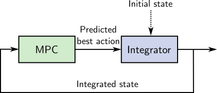
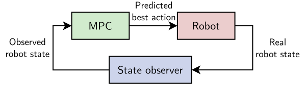

There are two ways model predictive control (MPC) has been applied to legged
locomotion so far: open loop and closed loop MPC. In both cases, a model
predictive control (numerical optimization) problem is derived from a model of
the system and solved, providing a sequence of actions that can be used to
drive the actual system. Open loop and closed loop MPC differ in their choice
of initial state.
Open loop model predictive control
Open loop MPC is a motion planning solution where the plan is "unrolled"
progressively. In bipedal walking, it is also known as walking pattern
generation. In this
approach, MPC outputs are integrated using the same forward dynamics model as
the one used to derive the MPC problem itself. For instance, that model is
xk+1=Axk+Buk in linear model predictive control.
The resulting state xk+1 is then used as initial state for the
MPC problem of the next control cycle:

Note that the initial state depicted above can be either purely model-based or
observed from sensors. What characterizes open loop MPC is the use of the model
for integration from one step to the next. State can also be reinitialized from
sensors at specific events, such as when the robot stops walking or after an
impact.
One of the first breakthroughs in humanoid walking, the preview control
method (Kajita et al., 2003),
is open loop. It was later shown to be equivalent to linear model predictive
control (Wieber, 2006). These
seminal papers don't mention the integrator directly, but open loop MPC is how
the generated center of mass trajectories were executed in practice on the
HRP-2 and HRP-4 humanoids. This is explicit in code that was released more
recently, for instance the LIPM walking controller from CNRS or
the centroidal control collection from AIST.
Closed loop model predictive control
Closed loop MPC is initialized from the latest observation:

Observations, even when they are filtered, are subject to uncertainty and
measurement errors, which raises new questions and edge cases to handle
compared to open loop MPC. For instance, what if the MPC problem has state
constraints Cxk≤e, but the initial state does not
satisfy Cx0≤e?
This question was encountered by (Bellicoso et al., 2017) in the case of ZMP constraints during quadrupedal locomotion. It is at the
origin of the robust closed-loop MPC studied by (Villa and Wieber, 2017) in the
case of bipedal locomotion. Closed loop MPC is also the approach followed by
(Di Carlo et al., 2018) to
control the base position and orientation of a walking quadruped through
contact forces.
Pros and cons
A benefit of open loop MPC, compared to its closed loop counterpart, is that it
makes it easier to enforce guarantees such as recursive feasibility by choosing
proper terminal constraints.
Recursive feasibility is the guarantee that if the current MPC problem is
feasible, then the next MPC problem (after integration) will be feasible as
well. This is an important property in practice to make sure that the robot
does not run "out of plan" while walking, which is dangerous if its current
state is not a static equilibrium.
Open loop MPC only generates a reference state, and is therefore commonly
cascaded with a walking stabilizer to implement
feedback from the observed state. The main drawback of this approach is that a
stabilizer is often by design more short-sighted than a model predictive
controller, so that the combined system may not be general enough to discover
more complex recovery strategies (re-stepping, crouching, side stepping, ...)
that closed loop MPC can discover.
To go further
Recursive feasibility is easier to enforce in open loop MPC, but it can also be
achieved in closed loop. What makes it challenging at first is that the direct
feedback from observations to the initial state of the MPC problem can move it
too far away from the previous solution. One way to palliate this is indirect
feedback, where the initial state of the subsequent MPC problem is constrained
to lie around (not exactly at) the observed one. This approach may let the plan
drift, with a rate parameterized by the extent of the initial state constraint,
but it can also preserve recursive feasibility.
In this short overview, we mentioned measurement errors in the initial state of
closed-loop MPC, but we didn't dig into the question of measurement
uncertainty. This point, as well as other sources of uncertainty, can be taken
into account in the more general framework of stochastic model predictive
control.
On a related note:
Thanks to Nahuel Villa
for his feedback on previous versions of this post!
Discussion
Feel free to post a comment by e-mail using the form below. Your e-mail address will not be disclosed.